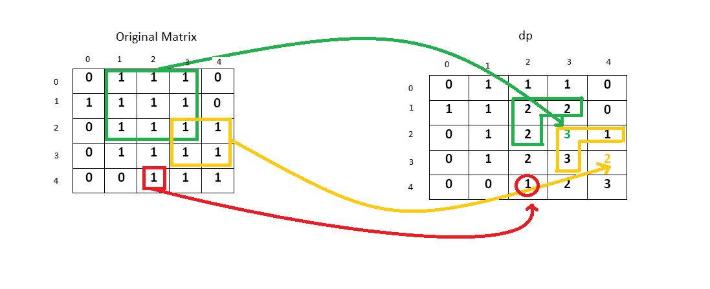

Given a 2D binary matrix filled with 0’s and 1’s, find the largest square containing only 1’s and return its area.
Example:
Input: 1 0 1 0 0 1 0 1 1 1 1 1 1 1 1 1 0 0 1 0 Output: 4
根据左上、左边、上边加自身，确定一个最小正方形；然后再进一步，在小正方形基础上，从四周选择已有正方形中最小，然后扩大，再这个过程中记录下最大的正方形边长，即可得到结果。思路如下图：

简化一下，不需要矩阵来存储所有正方形的计算结果，只需要一行来记录上一行计算结果和当前行计算结果即可。
参考资料
Given a 2D binary matrix filled with 0’s and 1’s, find the largest square containing only 1’s and return its area.
Example:
Input: * 1 0 1 0 0 1 0 <font color="red">1 <font color="red">1 1 1 1 <font color="red">1 <font color="red">1 1 1 0 0 1 0 *Output: 4
1
2
3
4
5
6
7
8
9
10
11
12
13
14
15
16
17
18
19
20
21
22
23
24
25
26
27
28
29
30
31
32
33
34
35
36
37
38
39
40
41
42
43
44
45
46
47
48
49
50
51
52
53
54
55
56
57
58
59
60
61
62
63
64
65
66
67
68
69
70
71
72
73
74
75
76
77
78
79
80
81
82
83
package com.diguage.algorithm.leetcode;
import java.util.Objects;
/**
* = 221. Maximal Square
*
* https://leetcode.com/problems/maximal-square/[Maximal Square - LeetCode]
*
* @author D瓜哥, https://www.diguage.com/
* @since 2020-01-28 12:21
*/
public class _0221_MaximalSquare {
/**
* Runtime: 4 ms, faster than 95.17% of Java online submissions for Maximal Square.
* Memory Usage: 43.3 MB, less than 91.18% of Java online submissions for Maximal Square.
*
* Copy from: https://leetcode.com/problems/maximal-square/solution/[Maximal Square solution - LeetCode]
*/
public int maximalSquare(char[][] matrix) {
if (Objects.isNull(matrix) || matrix.length == 0) {
return 0;
}
int yLength = matrix.length;
int xLength = matrix[0].length;
int[] dp = new int[xLength + 1];
int maxSideLength = 0;
int previous = 0;
for (int y = 1; y <= yLength; y++) {
for (int x = 1; x <= xLength; x++) {
int temp = dp[x];
if (matrix[y - 1][x - 1] == '1') {
dp[x] = Math.min(Math.min(previous, dp[x]), dp[x - 1]) + 1;
maxSideLength = Math.max(maxSideLength, dp[x]);
} else {
dp[x] = 0;
}
previous = temp;
}
}
return maxSideLength * maxSideLength;
}
/**
* Runtime: 13 ms, faster than 8.65% of Java online submissions for Maximal Square.
* Memory Usage: 43.9 MB, less than 64.71% of Java online submissions for Maximal Square.
*
* Copy from: https://leetcode.com/problems/maximal-square/solution/[Maximal Square solution - LeetCode]
*/
public int maximalSquareMatrix(char[][] matrix) {
if (Objects.isNull(matrix) || matrix.length == 0) {
return 0;
}
int yLength = matrix.length;
int xLength = matrix[0].length;
int[][] dp = new int[yLength + 1][xLength + 1];
int maxSideLength = 0;
for (int y = 1; y <= yLength; y++) {
for (int x = 1; x <= xLength; x++) {
if (matrix[y - 1][x - 1] == '1') {
dp[y][x] = Math.min(Math.min(dp[y - 1][x - 1], dp[y - 1][x]), dp[y][x - 1]) + 1;
maxSideLength = Math.max(maxSideLength, dp[y][x]);
}
}
}
return maxSideLength * maxSideLength;
}
public static void main(String[] args) {
_0221_MaximalSquare solution = new _0221_MaximalSquare();
char[][] m1 = {
{'1', '0', '1', '0', '0'},
{'1', '0', '1', '1', '1'},
{'1', '1', '1', '1', '1'},
{'1', '0', '0', '1', '0'}
};
int r1 = solution.maximalSquare(m1);
System.out.println((r1 == 4) + " : " + r1);
}
}